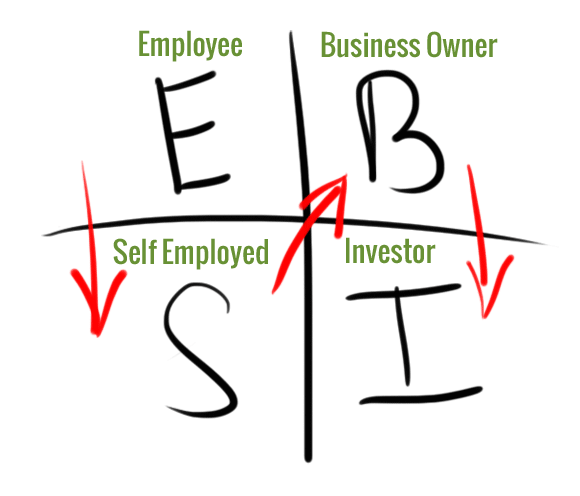

It explains the various career paths and clearly explains our
tax system structure. After reading many financial books over the years, I don’t
accept anything discussed as gospel. I take in the good ideas, see what works, and throw
away the bad ones. If you were to take in only one of his ideas, this would be it.
Love or hate Robert, his Cashflow Quadrant makes sense. It explains perfectly the way
our tax system has been setup and how various professionals view the world.
As Kiyosaki discusses in the book “The Cashflow Quadrant” a table is divided into four
areas. E and S quadrants are on the left side, and B and I quadrants on the right side.
The diagram below better explains it. You can be in all quadrants, but most people are
not. The goal is to progress through the arrows and become more on the right side of the
table.

E Employee (E) – Otherwise known as a job
Self-Employed (S) – Small business owners or self employed (Doctors, and lawyers)
Business Owner (B) – Big businesses (500 and more employees). Businesses that are selling products and predefined services.
Investor (I) – People like Warren Buffett
Active Income
On the left side of the table is active income. You are trading time for money. In order to make money you must perform something. Every day you start from zero.
Passive Income
On the other side, it is passive income. You do not have to be present to generate income. Things like real estate, stocks, bonds are sources of passive income. You are literally making money while sleeping.
Cashflow Quadrant
Cashflow Quadrants
E – Employee
Most individuals only live in this area. You work for a company and trade your time for money. If you want to earn more money, you must work more hours. Another option is work for another company that pays better. With this position in the quadrant there is no passive income. If you don’t work, you don’t make any money.
S – Self Employed
This is one step better than an employee, but in reality you still are trading time for money. You own your own business, but in reality the business owns you. The positive benefit you have more personal and financial freedom than an employee.
B – Business Owner
A business implies you have a system in place. You have others working for you as employees. You aren’t selling your time for money, but rather selling a product or service. In other words, you don’t have to be working for the business to generate income.
I – Investor
This is where you truly have passive income. Investments like stocks, bonds, and real estate generate an annual cashflow. These are the investments that will allow you to retire. It can also be things like trademarks, copyrights, and royalties. Things you build once and have a long (5-10 year+) timespan in payouts.
https://youtube.com/watch?v=arh3X9t_98g%3Frel%3D0%26controls%3D0%26enablejsapi%3
D1
Conclusion
At one time, small businesses were praised in our country. After all, small businesses comprise 70-80% of our economy. That, unfortunately, doesn’t seem to be the case anymore. The self-employed are constantly getting hit with new taxes that larger businesses can either avoid or minimize through various legal tax loopholes or vaivers. Small business owners don’t have lobbyists, a team of lawyers and accountants to minimize taxes and regulations.
Rightly or wrongly, our tax system is designed to favor large businesses (B) and investors (I). Typically in these quadrants you get lower tax rates. Through lobbing you are able to create a large moat around your business to prevent others from competing.
The goal then should be as to get in these two quadrants as much as possible. This isn’t making a political statement, it is just the way things are setup. Regardless which political party and system you believe in, it’s just the way the world works. What matters is the way things are, not in some ideal fantasy land. Our tax code is designed to favor investing and large businesses.
This perfectly explains Mitt Romney’s effective tax rate. It also explains
why many high paid salaried employees get screwed with our tax system.